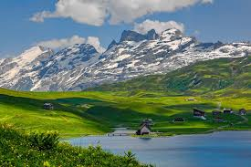
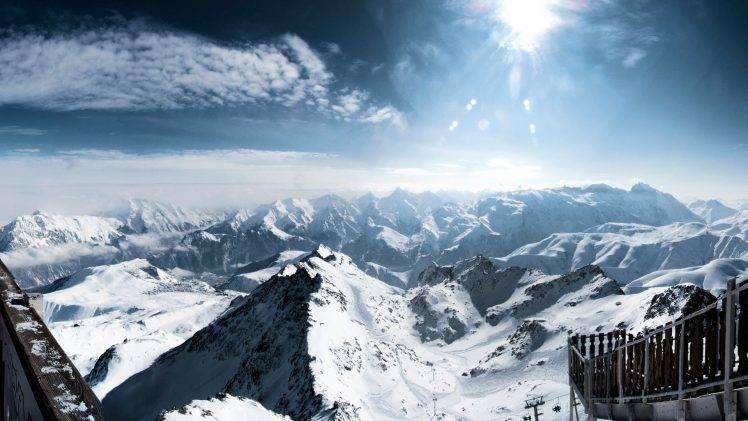

Fjallgarðar
Alpanir eru stórir
Það snjóar stundum í Ölpunum
Hannibal labbaði fyrir þá með fíla frá spáni
Alparnir (/ ælps /; franska: Alpes [alp]; þýska: Alpen [ˈalpn̩] (Um þessa hljóðlista); ítalska: Alpi [ˈalpi]; rómversk: alparnir; slóvensku: alpe [ˈáːlpɛ]) eru hæstu og umfangsmestu fjallskilakerfi sem liggur að öllu leyti í Evrópu, [2] [athugasemd 1] og teygir sig um 1.200 km (750 mílur) yfir átta Alpalönd (frá vestri til austurs): Frakkland, Sviss, Mónakó, Ítalía, Liechtenstein, Austurríki, Þýskaland, og Slóveníu. [3] Fjöllin voru mynduð á tugum milljóna ára þegar afrísk og evrasísk tektónísk plata lentu saman. Mikil stytting sem stafaði af atburðinum leiddi til þess að sjávarbergsgrjót hækkaði með því að steypa og brjóta saman í háa fjallstinda eins og Mont Blanc og Matterhorn. Mont Blanc nær yfir frönsk-ítalska landamærin og í 4.810 m (15.781 fet) er hæsta fjall Alpanna. Á svæðinu í Alpafjallinu eru um hundrað tindar hærri en 4.000 metrar.
Hæð og stærð sviðsins hefur áhrif á loftslagið í Evrópu; í fjöllunum er úrkomumagn mjög breytilegt og loftslagsskilyrði samanstanda af aðskildum svæðum. Dýralíf eins og heyrnartól býr í hærri tindum upp í 3.400 m hæð, og plöntur eins og Edelweiss vaxa á grýttum svæðum í neðri hæðum og í hærri hæð. Sönnunargögn um búsetu manna í Ölpunum fara aftur til Paleolithic tíma. Múmískur maður, staðráðinn í að vera 5.000 ára gamall, uppgötvaðist á jöklinum við landamæri Austurríkis og Ítalíu árið 1991.
Í ölpönum er hægt að skíði far á snjóbretti og deyja ef maður fer ekki varlega.
Sjá mynband fyrir nánari lýsingar
Minnir að þeir séu á bústaðveginum
Nálægt spítalanum
En kíkjið á þetta kort til öryggis
© 2019 ---
⇧